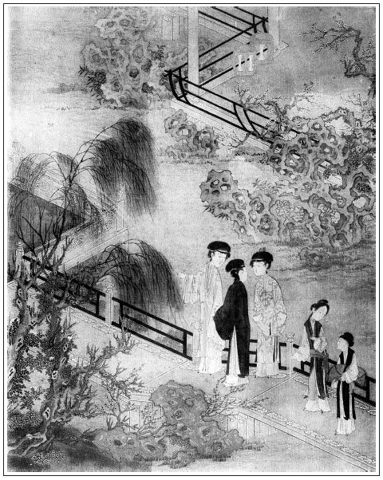

張旁一部書中主意。
張回此回乃一部翻案之筆，點睛處也。向日寫瓶兒，寫金蓮等人，今皆一一散去。使不寫春梅一尋舊遊，則如水流去而無瀠迴之致，雪飄落而無回風之花，何以謂之文筆也哉！今看他亦且不寫敬濟到府，先又插入春梅一重遊，便使千古傷心，一朝得意，俱迥然言表，是好稱手文字，是好結局。不致一味敗壞，又見此成彼敗，興亡靡定，真是哭殺人，歎殺人。
此後敬濟入府，而春梅與月娘離矣，故此回寫重遊。然於游自己之故宮與金蓮之舊館，串入敬濟，便有無限傷心之處。不特泛泛一筆，寫其相思之無味也。寫楊光彥又為敬濟之交遊十弟兄一描。總之，作者深恨交遊之假而作此書。故此回又從吳典恩串出，以深惡痛絕之下，方結出二搗鬼，以為我親兄弟放聲大哭也。
此回葉道相面，單結經濟。蓋上回冰鑒為眾人一描，後回卜龜又一描，方將眾人全收去。夫既遮遮掩掩將敬濟隱於西門慶文中，則不必急為敬濟結束。今既放手寫敬濟，是用於將到守備府中，即為之照冰鑒卜龜一樣結束，以便下文一放一收而便結也。
此回作者極寫人生聚難而散易，偶有散而復聚，聚而復散，無限悲傷興感之意。故特寫春梅既去，復尋舊遊，適然相遇，固千古奇逢，亦千古之春梅念舊主人，而掛錢請酒之出於自然而然也。
詞曰：
人生千古傷心事，還唱《後庭花》。舊時王謝，堂前燕子，張夾陪一句。恍然一夢，仙肌勝雪，宮鬢堆鴉。江州司馬，青衫淚濕，想在天涯。
──右調《青衫濕》

話說光陰迅速，日月如梭，又早到正月二十一日。春梅和周守備說了，備一張祭桌，四樣羹果，一壇南酒，差家人周義送與吳月娘。一者是西門慶三週年，張夾噫，如此敘來，韶光迅速，人情變幻，有淚令人何處灑？二者是孝哥兒生日。月娘收了禮物，打發來人帕一方，銀三錢。這邊連忙就使玳安兒穿青衣，具請書兒請去。上寫著：
重承厚禮，感感。即刻捨具菲酌，奉酬腆儀。仰希高軒俯臨，不外，幸甚。
西門吳氏端肅拜請大德周老夫人妝次
春梅看了，到日中才來。戴著滿頭珠翠金鳳頭面釵梳，胡珠環子。身穿大紅通袖、四獸朝麒麟袍兒，翠藍十樣錦百花裙，玉玎當禁步，束著金帶。坐著四人大轎，青段銷金轎衣。軍牢執籐棍喝道，家人伴當跟隨，抬著衣匣。後邊兩頂家人媳婦小轎兒，緊緊跟隨。繡眉相如駟馬高車，不過如此。張夾極力描寫。吳月娘這邊請了吳大妗子相陪，又叫了四個唱的彈唱。聽見春梅來到，月娘亦盛妝縞素打扮，頭上五梁冠兒，戴著稀稀幾件金翠首飾，繡旁正宜如此。上穿白綾襖，下邊翠藍段子裙，張夾今昔生慨。與大妗子迎接至前廳。春梅大轎子抬至儀門首，才落下轎來。兩邊家人圍著，張夾又是如此描寫。到於廳上敘禮，向月娘插燭也似拜下去。月娘連忙答禮相見，說道：「向日有累姐姐費心，粗尺頭又不肯受。今又重承厚禮祭桌，感激不盡。」春梅道：「惶恐。家官府沒甚麼，這些薄禮，表意而已。一向要請奶奶過去，家官府不時出巡，所以不曾請得。」月娘道：「姐姐，你是幾時好日子？我只到那日買禮看姐姐去罷。」繡眉行禮未畢，且忙問生日，似親熱而愈見往日之疏。春梅道：「奴賤日是四月廿五日。」張夾丑絕月娘。月娘道：「奴到那日已定去。」兩個敘禮畢，春梅務要把月娘讓起，受了兩禮。張夾丑絕月娘。然後吳大妗子相見，亦還下禮去。
春梅道：「你看大妗子，又沒正經。」一手扶起受禮。張夾所以罵申二姐必著大妗子在旁，方令此時滿足。大妗子再三不肯，止受了半禮。一面讓上坐，月娘和大妗子主位相陪。然後家人媳婦、丫鬟、養娘，都來參見。春梅見了奶子如意兒抱著孝哥兒，吳月娘道：「小大哥還不來與姐姐磕個頭兒，謝謝姐姐。張夾丑絕。今日來與你做生日。」那孝哥兒真個下如意兒身來，與春梅唱喏。月娘道：「好小廝，不與姐姐磕頭，只唱喏。」那春梅連忙向袖中摸出一方錦手帕，一副金八吉祥兒，教替他塞帽兒上。月娘道：「又教姐姐費心。」又拜謝了。落後小玉、奶子來見磕頭。春梅與了小玉一對金頭簪子，繡旁不足報德。張夾丑月娘。與了奶子兩枝銀簪兒。月娘道：「姐姐，你還不知，奶子與了來興兒做媳婦兒了。來興兒那媳婦害病沒了。」春梅道：「他一心要在咱家，倒也好。」繡旁語著痛癢。張夾餘恨。一面丫鬟拿茶上來，吃了茶，月娘道：「請娘娘後邊明間內坐罷，這客位內冷。」
春梅來後邊西門慶靈前，又早點起燈燭，擺下桌面祭禮。春梅燒了紙，落了幾點眼淚。繡眉春梅此時哭才情深，不哭則情淺，落幾點眼淚，不深不淺，最得其情。張夾直照出西門。然後周圍設放圍屏，火爐內生起炭火，安放大八仙桌席，擺茶上來。無非是細巧蒸酥，希奇果品，絕品芽茶。月娘和大妗子陪著吃了茶，讓春梅進上房裡換衣裳。脫了上面袍兒，家人媳婦開衣匣，取出衣服，更換了一套綠遍地錦妝花襖兒，紫丁香色遍地金裙。張夾總照出門。在月娘房中坐著，說了一回，月娘因問道：「哥兒好麼？今日怎不帶他來這裡走走？」春梅道：「不是也帶他來與奶奶磕頭，他爺說天氣寒冷，怕風冒著他。他又不肯在房裡，只要那當直的抱出來廳上外邊走。繡旁又映前。張夾有敬濟在心。這兩日，不知怎的，只是哭。」月娘道：「他周爺也好大年紀，得你替他養下這點孩子也彀了，也是你裙帶上的福。張夾直照前吳神仙。說他孫二娘還有位姐兒，幾歲兒了？」春梅道：「他二娘養的叫玉姐，今年交生四歲。俺這個叫金哥。」月娘道：「說他周爺身邊還有兩位房裡姐兒？」春梅道：「是兩個學彈唱的丫頭子，都有十六七歲，成日淘氣在那裡。」張夾語犯月娘。月娘道：「他爺也常往他身邊去不去？」繡眉月娘只以西門慶行事作榜樣看天下人，所以語語滯呆。張夾月娘厚臉。春梅道：「奶奶，他那裡得工夫在家？多在外，少在裡。張夾對西門下針。如今四外好不盜賊生發，朝廷敕書上，又教他兼管許多事情：鎮守地方，巡理河道，提拿盜賊，操練人馬。常不時往外出巡幾遭，好不辛苦哩。」說畢，小玉又拿茶來吃了。春梅向月娘說：「奶奶，你引我往俺娘那邊花園山子下走走。」張夾本意，真是千古傷心。月娘道：「我的姐姐，還是那咱的山子花園哩！自從你爹下世，沒人收拾他，如今丟搭的破零零的。石頭也倒了，樹木也死了，俺等閒也不去了。」春梅道：「不妨，奴就往俺娘那邊看看去。」這月娘強不過，只得叫小玉拿花園門山子門鑰匙，張夾冷極。開了門，月娘、大妗子陪春梅，到裡邊游看了半日。但見：
垣牆欹損，台榭歪斜。兩邊畫壁長青苔，滿地花磚生碧草。山前怪石遭塌毀，不顯嵯峨；亭內涼床被滲漏，已無框檔。石洞口蛛絲結網，魚池內蝦蟆成群。狐狸常睡臥雲亭，黃鼠往來藏春閣。料想經年人不到，也知盡日有雲來。張夾有十九回一賦，理應有此一賦特特相映。
春梅看了一回，先走到李瓶兒那邊。見樓上丟著些折桌、壞凳、破椅子，下邊房都空鎖著，地下草長的荒荒的。繡眉燕去巢空，一片荒涼情境，那能不傷心墮淚。張夾先映瓶兒，悲中出悲。方來到他娘這邊，樓上還堆著些生藥香料，下邊他娘房裡，止有兩座廚櫃，床也沒了。因問小玉：「俺娘那張床往那去了？怎的不見？」小玉道：「俺三娘嫁人，賠了俺三娘去了。」月娘走到跟前說：「因你爹在日，將他帶來那張八步床賠了大姐在陳家，落後他起身，卻把你娘這張床賠了他，嫁人去了。」春梅道：「我聽見大姐死了，說你老人家把床還抬的來家了。」張夾如此照出，可知金針之密。月娘道：「那床沒錢使，只賣了八兩銀子，打發縣中皂隸，都使了。」春梅聽言，點了點頭兒。那星眼中由不的酸酸的，口中不言，心內暗道：「想著俺娘那咱，爭強不伏弱的問爹要買了這張床。張夾照應金蓮。我實承望要回了這張床去，也做他老人家一念兒，不想又與了人去了。」由不的心下慘切。繡眉春梅眷懷今昔，不減黍離之悲。張夾午夜清鐘。又問月娘：「俺六娘那張螺甸床怎的不見？」月娘道：「一言難盡。自從你爹下世，日逐只有出去的，沒有進來的。常言家無營活計，不怕斗量金。也是家中沒盤纏，抬出去交人賣了。」春梅問：「賣了多少銀子？」月娘道：「止賣了三十五兩銀子。」春梅道：「可惜了，那張床，當初我聽見爹說，值六十兩多銀子，只賣這些兒。早知你老人家打發，我到與你老人家三四十兩銀子要了也罷。」張夾又找瓶兒，筆有連環之勢。月娘道：「好姐姐，人那有早知道的？」一面歎息了半日。
只見家人周仁走來接，說：「爺請奶奶早些家來，哥兒尋奶奶哭哩。」這春梅就抽身往後邊來。月娘叫小玉鎖了花園門，同來到後邊明間內。又早屏開孔雀，簾控鮫綃，擺下酒筵。兩個妓女，銀箏琵琶，在旁彈唱。吳月娘遞酒安席，安春梅上座，繡眉昔年下婢，今日上賓，為正乎，為僭乎？所不辨也。張夾丑絕，正是此回正意。春梅不肯，務必拉大妗子，同他一處坐的。張夾可知月娘下陪也。月娘主位，筵前遞了酒，湯飯點心，割切上席。春梅叫家人周仁，賞了廚子三錢銀子。說不盡盤堆異品，酒泛金波。當下傳杯換盞，吃至晚色將落時分，只見宅內又差伴當，拿燈籠來接。張夾比昔日叫人接金蓮何如？月娘那裡肯放，教兩個妓女在跟前跪著彈唱勸酒。張旁特映申二姐。分付：「你把好曲兒孝順你周奶奶一個兒。」一面叫小玉斟上大鐘，放在跟前，說：「姐姐，你分付個心愛的曲兒，叫他兩個唱與你下酒。」春梅道：「奶奶，奴吃不得了，怕孩兒家中尋我。」月娘道：「哥兒尋，左右有奶子看著，天色也還早哩，我曉得你好小量兒！」張夾丑絕。春梅因問那兩個妓女：「你叫甚名字？是誰家的？」兩個跪下說：「小的一個是韓金釧兒妹子韓玉釧兒，一個是鄭愛香兒侄女鄭嬌兒。」張夾此等人，亦有今昔之感。春梅道：「你每會唱《懶畫眉》不會？」玉釧兒道：「奶奶分付，小的兩個都會。」月娘道：「你兩個既會唱，斟上酒你周奶奶吃，你每慢唱。」小玉在旁連忙斟上酒，兩個妓女，一個彈箏，一個琵琶，唱道：
冤家為你幾時休？捱到春來又到秋。誰人知道我心頭。天，害的我伶仃瘦，聽的音書兩淚流。從前已往訴緣由，誰想你無情把我丟！
那春梅吃過，月娘又令鄭嬌兒遞上一杯酒與春梅。春梅道：「你老人家也陪我一杯。」兩家於是都齊斟上，兩個妓女又唱道：
冤家為你減風流，鵲噪簷前不肯休，死聲活氣沒來由。天，倒惹的情拖逗，助的淒涼兩淚流。從他去後意無休，誰想你辜恩把我丟。
春梅說：「奶奶，你也教大妗子吃杯兒。」張夾襯月娘一日奉承不暇處。月娘道：「大妗子吃不的，教他拿小鍾兒陪你罷。」一面令小玉斟上大妗子一小鍾兒酒。兩個妓女又唱道：
冤家為你惹場憂，坐想行思日夜愁，香肌憔瘦減溫柔。天，要見你不能勾，悶的我傷心兩淚流。從前與你共綢繆，誰想你今番把我丟。
春梅見小玉在跟前，也斟了一大鐘教小玉吃。繡眉今日見春梅，惟小玉不愧。張夾生色中卻不是閒文。月娘道：「姐姐，他吃不的。」張夾丑絕。春梅道：「奶奶，他也吃兩三鍾兒，我那咱在家裡沒和他吃？」繡旁明言之，愈見其高。張夾又襯出門情意各有深淺。於是斟上，教小玉也吃了一杯。妓女唱道：
冤家為你惹閒愁，病枕著床無了休，滿腹憂悶鎖眉頭。天，忘了還依舊，助的我腮邊兩淚流。從前與你兩無休，誰想你經年把我丟。
看官聽說，當時春梅為甚教妓女唱此詞？一向心中牽掛陳敬濟，在外不得相會。情種心苗，故有所感，發於吟詠。張夾點明。然感金蓮而思敬濟，又是兩段苦事。又見他兩個唱的口兒甜，乖覺，奶奶長、奶奶短奉承，心中歡喜。叫家人周仁近前來，拿出兩包兒賞賜來，每人二錢銀子。張夾反襯申二姐。兩個妓女放下樂器，磕頭謝了。不一時，春梅起身，月娘款留不住。伴當打燈籠，拜辭出門，坐上大轎。家人媳婦，都坐上小轎。前後打著四個燈籠，軍牢喝道而去。正是：
時來頑鐵有光輝，運去黃金無艷色。
有詩為證：
點絳唇紅弄玉嬌，鳳凰飛下品鸞簫。
堂前高把湘簾卷，燕子還來續舊巢。張夾傷心語。
且說春梅自從來吳月娘家赴席之後，因思想陳敬濟，不知流落在何處。繡眉感金蓮而思敬濟，情生情轉，默默自知。張夾接下無痕。歸到府中，終日只是臥床不起，心下沒好氣。守備察知其意，繡旁也只察得一半。說道：「只怕思念你兄弟，不得其所。」一面叫張勝、李安來，分付道：「我一向委你尋你奶奶兄弟，如何不用心找尋？」二人告道：「小的一向找尋來，一地裡尋不著下落，已回了奶奶話了。」守備道：「限你二人五日，若找尋不著，討分曉。」這張勝、李安領了鈞語下來，都帶了愁顏。沿街繞巷，各處留心找問，不題。
話分兩頭。單表陳敬濟自從守備府中打了出來，欲投晏公廟。又聽見人說師父任道士死了，就害怕不敢進廟來，張夾緊接脈。又沒臉兒見杏庵王老，白日裡到處打油飛，夜晚間還鑽入冷鋪中存身。一日，也是合當有事，敬濟正在街上站立，只見鐵指甲楊大郎，頭戴新羅帽兒，身穿白綾襖子，騎著一疋驢兒，揀銀鞍轡，一個小廝跟隨，正從街心走過來。敬濟認得是楊光彥，便向前一把手，把嚼環拉住，說道：「楊大哥，一向不見。自從清江浦把我半船貨物偷拐走了，我好意往你家問，反吃你兄弟楊二風拿瓦楔鑽破頭，趕著打上我家門來。今日弄的我一貧如洗，你是會搖擺受用。」那楊大郎見陳敬濟已自討吃，便佯佯而笑，說：張夾人情如此，何足怪？作者描盡哉！「今日晦氣，出門撞見瘟死鬼，量你這餓不死賊花子，那裡討半船貨？我拐了你的，你不撒手？須吃我一頓馬鞭子。」敬濟便道：「我如今窮了，你有銀子，與我些盤纏。張夾只如此技量。不然，咱到個去處講講。」楊大郎見他不放，跳下驢來，向他身上抽了幾鞭子。喝令小廝：「與我撏了這少死的花子去！」那小廝使力把敬濟推了一交，楊大郎又向前踢了幾腳，踢打的敬濟怪叫。須臾，圍了許多人。旁邊閃過一個人來，青高裝帽子，勒著手帕，倒披紫襖，白布𧜽子，精著兩條腿，鈒著蒲鞋，生的阿兜眼，掃帚眉，張夾難為敬濟。料綽口，三須鬍子，張夾難為敬濟。面上紫肉橫生，手腕橫筋競起。吃的楞楞睜睜，提著拳頭，向楊大郎說道：「你此位哥好不近理，他年少這般貧寒，張夾是本意。你只顧打他怎的？繡眉不意此等形象，卻風流而有情，觀人難哉！自古嗔拳不打笑面，他又不曾傷犯著你。你有錢，看平日相交，與他些；沒錢罷了，如何只顧打他？自古路見不平，也有向燈向火。」楊大郎說：「你不知，他賴我拐了他半船貨，量他恁窮樣，那有半船貨物？」那人道：「想必他當時也是有根基人家娃娃，天生就這般窮來？閣下就是這般有錢？張夾二語道盡。老兄依我，你有銀子與他些盤纏罷。」那楊大郎見那人說了，袖內汗巾兒上拴著四五錢一塊銀子，解下來遞與敬濟，與那人舉一舉手兒，上驢子揚長去了。
敬濟地下扒起來，抬頭看那人時，不是別人，卻是舊時同在冷鋪內，和他一鋪睡的土作頭兒飛天鬼侯林兒。張夾樹倒猢猻散，方有此人。近來領著五十名人，在城南水月寺曉月長老那裡做工，起蓋伽藍殿。因一隻手拉著敬濟說道：「兄弟，剛才若不是我拿幾句言語譏犯他，他肯拿出這五錢銀子與你？那賊卻知見范，他若不知范時，好不好吃我一頓好拳頭。你跟著我，咱往酒店內吃酒去來。」到一個食葷小酒店，案頭上坐下，叫量酒：「拿四賣嗄飯，兩大壺酒來。」不一時，量酒擺下小菜嗄飯，四盤四碟，兩大坐壺時興橄欖酒。不用小杯，拿大磁甌子，因問敬濟：「兄弟，你吃麵吃飯？」量酒道：「面是溫淘，飯是白米飯。」敬濟道：「我吃麵。」須臾，掉上兩三碗溫面上來。侯林兒只吃一碗，敬濟吃了兩碗。然後吃酒。侯林兒向敬濟說：「兄弟，你今日跟我往坊子裡睡一夜，繡旁先講明，妙。張夾經濟此時故以為知遇也。明日我領你城南水月寺曉月長老那裡，修蓋伽藍殿，並兩廊僧房。你哥率領著五十名做工。你到那裡，不要你做重活，只抬幾筐土兒就是了，也算你一工，討四分銀子。我外邊賃著一間廈子，晚夕咱兩個就在那裡歇，繡旁口不放鬆。張夾找一句。做些飯打發咱的人吃。把門你一把鎖鎖了，家當都交與你，繡眉窮話富說，可發一笑。然敬濟當此饑寒切膚之時，有此遭際，雖真謂之富貴可也。張夾真妻子。好不好？強如你在那冷鋪中，替花子搖鈴打梆，這個還官樣些。」敬濟道：「若是哥哥這般下顧兄弟，可知好哩。不知這工程做的長遠不長遠？」侯林兒道：「才做了一個月。這工程做到十月裡，不知完不完。」兩個說話之間，你一鐘，我一盞，把兩大壺酒都吃了。量酒算帳，該一錢三分半銀子。敬濟就要拿出銀子來秤，侯林兒推過一邊，說：「傻兄弟，莫不教你出錢？哥有銀子在此。」一面扯出包兒來，秤了一錢五分銀子與掌櫃的。還找了一分半錢袖了，搭伏著敬濟肩背，同到坊子裡，兩個在一處歇臥。二人都醉了。這侯林兒晚夕干敬濟後庭花，足幹了一夜。親哥、親達達、親漢子、親爺，口裡無般不叫將出來。張夾丑絕敬濟，金蓮不復辯矣。
到天明，同往城南水月寺。果然寺外侯林兒賃下半間廈子，繡眉果然二字，寫出此輩言不足信是其常。裡面燒著炕柴，早也買下許多碗盞家活。早辰上工，叫了名字。眾人看見敬濟，不上二十四五歲，白臉子，生的眉目清俊，就知是侯林兒兄弟，都亂調戲他。先問道：「那小伙子兒，你叫甚名字？」陳敬濟道：「我叫陳敬濟。」那人道：「陳敬濟，可不由著你就擠了。」又一人說：「你恁年小小的，怎干的這營生？捱的這大扛頭子？」繡眉戲謔得俚言，方是俗人口中戲謔。張夾是此一班人語。侯林兒喝開眾人，罵：「怪花子，你只顧奚落他怎的？」一面散了鍬橛筐扛，派眾人抬土的抬土，和泥的和泥，打雜的打雜。
原來曉月長老，教一個葉頭陀做火頭，造飯與各作匠人吃。這葉頭陀年約五十歲，一個眼瞎，穿著皂直裰，精著腳，腰間束著爛絨絛，也不會看經，只會念佛，善會麻衣神相。張旁寫盡世人雙眼不能識人，反不若瞎子能風鑒也。眾人都叫他做葉道。一日做了工下來，眾人都吃畢飯，也有閒坐的，臥的，也有蹲著的。繡旁傳神。張夾總是史筆。只見敬濟走向前，問葉頭陀討茶吃。這葉頭陀只顧上上下下看他。內有一人說：「葉道，這個小伙子兒是新來的，你相他一相。」又一人說：「你相他相，倒相個兄弟。」一個說：「倒相個二尾子。」葉頭陀教他近前，端詳了一回，說道：「色怕嫩兮又怕嬌，聲嬌氣嫩不相饒。老年色嫩招辛苦，少年色嫩不堅牢。只吃了你面皮嫩的虧，一生多得陰人寵愛。八歲十八二十八，下至山根上至發，有無活計兩頭消，三十印堂莫帶煞。眼光帶秀心中巧，不讀詩書也可人，張夾是敬濟。文旁以敬濟為可人，必潘金蓮與侯林兒也。不謂批者亦為是。做作百般人可愛，縱然弄假又成真。休怪我說，一生心伶機巧，常得陰人發跡。你今多大年紀？」敬濟道：「我二十四歲。」葉道道：「虧你前年怎麼過來，吃了你印堂太窄，子喪妻亡，懸壁昏暗，人亡家破；唇不蓋齒，一生惹是招非；鼻若灶門，傢俬傾散。那一年遭官司口舌，傾家散業，見過不曾？」敬濟道：「都見過了。」葉頭陀道：「只一件，你這山根不宜斷絕。麻衣祖師說得兩句好：『山根斷兮早虛花，祖業飄零定破家。』早年父祖丟下家業，不拘多少，到你手裡，都了當了。你上停短兮下停長，主多成多敗，錢財使盡又還來。總然你久後營得家計，猶如烈日照冰霜。你如今往後，還有一步發跡，該有三妻之命。克過一個妻宮不曾？」敬濟道：「已克過了。」葉頭陀道：「後來還有三妻之會，但恐美中不美。三十上，小人有些不足，花柳中少要行走。」張夾直對神仙卜龜者。一個人說：「葉道，你相差了，他還與人家做老婆，那有三個妻來？」眾人正笑做一團，只聽得曉月長老打梆了，各人都拿鍬橛筐扛，上工做活去了。如此者，敬濟在水月寺，也做了約一月光景。
一日，三月中旬天氣，敬濟正與眾人抬出土來，在山門牆下，倚著牆根，向日陽蹲踞著捉身上虱蟣。只見一個人，頭帶萬字頭巾，身穿青窄衫，紫裹肚，腰繫纏帶，腳穿扁靴，騎著一疋黃馬，手中提著一籃鮮花兒。繡旁絕不枯澀。見了敬濟，猛然跳下馬來，向前深深的唱了諾，便叫：「陳舅，小人那裡沒尋，你老人家原來在這裡。」倒諕了敬濟一跳。張夾逼真。連忙還禮不迭，問：「哥哥，你是那裡來的？」那人道：「小人是守備周爺府中親隨張勝，自從舅舅府中官事出來，奶奶不好直到如今，老爺使小人那裡不找尋舅舅，不知在這裡。今早不是俺奶奶使小人到外莊上，折取這幾雜芍葯花兒，打這裡過，怎得看見你老人家在這裡？一來也是你老人家際遇，二者小人有緣。不消猶豫，就騎上馬，我跟你老人家往府中去。」那眾做工的人看著，面面相覷，不敢做聲。繡眉彼此但不出一語，寫匆匆驚喜不定光景，妙甚。這陳敬濟把鑰匙遞與侯林兒，張夾趣絕，當問他背夫逃走。騎上馬，張勝緊緊跟隨，逕往守備府中來。
正是：
良人得意正年少，今夜月明何處樓？
有詩為證：
白玉隱於頑石裡，黃金埋在污泥中。
今朝貴人提拔起，如立天梯上九重。
文回文禹門云：春梅之嫁周守備，平地登天，亦可謂感恩知己，又居然生子，亦可謂心滿意足，從前之事，大可革心洗面，付之煙消霧化。此一回之來主人家，泣祭舊主，此亦心情之厚，事理之宜，不必為春梅病也。顧何以身歸周守備，親祭西門慶，而[懶畫眉]之命唱，則又心心念念不忘陳敬濟，可見守備非其偕老之人，西門非其受寵之人，陳敬濟乃其生死不忘之人。此等婦女，尚可與之相處哉！
且男女之事，必須兩意相投，無味是一相請願也。春梅意中不忘敬濟，敬濟心中早已忘春梅。金蓮在時，以春梅為次，春梅不怨矣；金蓮死後，能念及在遠之玉樓，而近在目前、曾有首尾之春梅，並未嘗有一語及之，置之膜外，蓋已久矣。春梅為經濟做出許多醜樣子來，不但無以對守備，自問何以對金哥乎？
舊館之遊，實寫滄桑之變。乃正寫循還之理，並非專為春梅寫，亦並非專為月娘寫也。不過此二人，一是得意之人而今不得意，一是未得志之人而今得志，一是群妾以上之一人，一是諸妾以下之一人，固均是西門慶同時之人。二人經歷，即不啻西門慶身親經歷也。所難堪者，當時許多人，而今竟安往哉！